We Have A Demo
a wireless protocol hacking framework
/who
Let's talk a bit about WHAD...
- Wireless HAcking for Dummies 🤔
- Unified Host/Hardware protocol
- Python API + off-the-shelf tools
- Development started in 2021...
- Project released in 2024
Pwning with WHAD
/why
-
One day while we were struggling deciding what tools we really want to see in WHAD ...
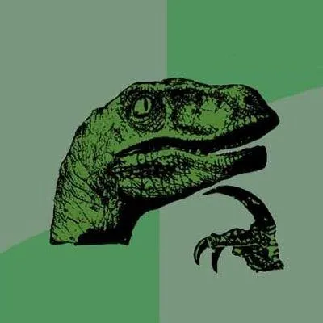
Can we describe a wireless attack as a combination of some basic bricks ?
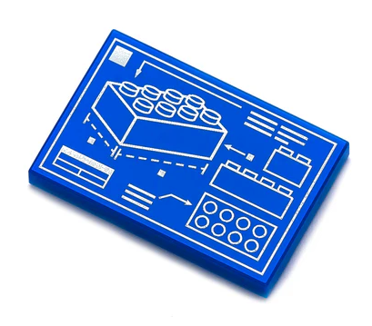
-
If so, we just need to make these basic bricks real ...
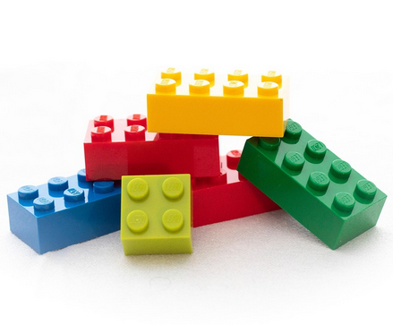
-
... and see how researchers use them to build cool tools or attacks !
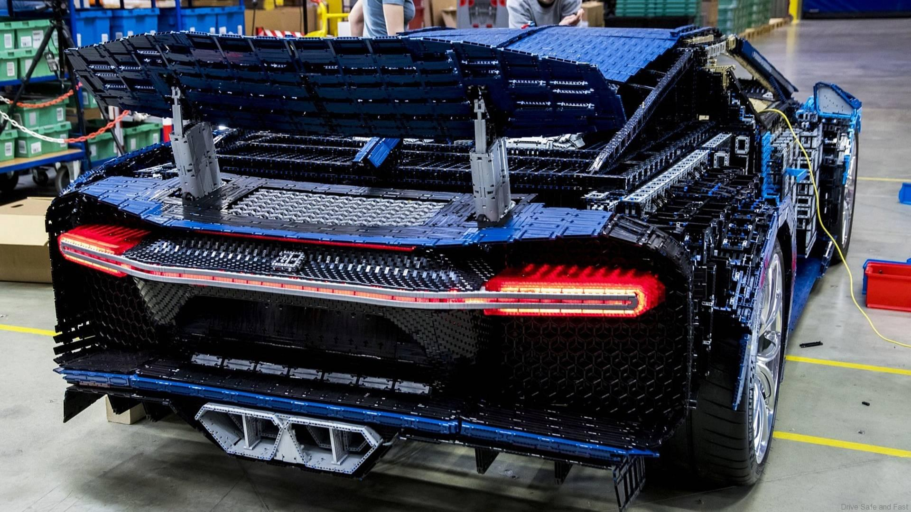
Example: real-time Heart Rate monitoring !
Implemented using 2 basic bricks !
A systematization of wireless attacks
Methodology
- Definition of a threat model
- Analysis & classification of known wireless attacks
- Identification of 11 unique primitives
Overview of the proposed primitives
Combining primitives
Data flow matters ...
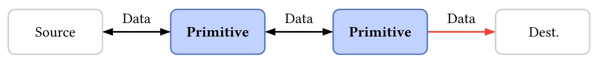
... but also timing !
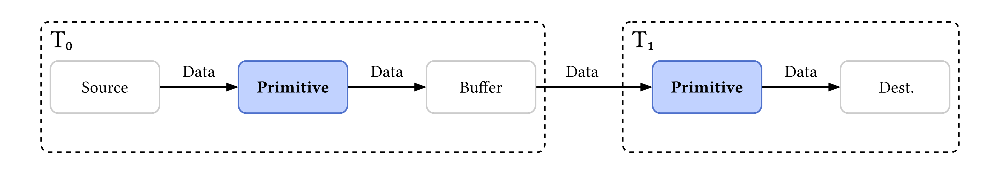
Modeling attacks:
some examples
Bluetooth Mesh:
Arbitrary path injection
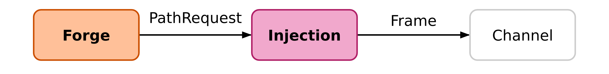
«An attacker can create a path from any network node to another by sending a specifically crafted PathRequest»
Bluetooth Mesh:
Forwarding table poisoning
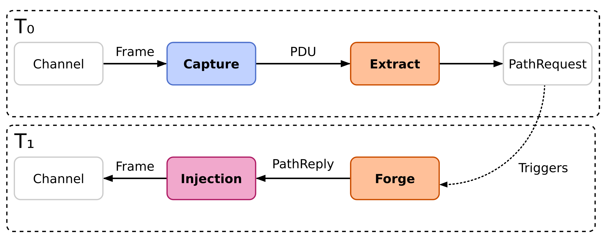
«An attacker can poison a PO's forwarding table by immediately responding to a PathRequest with a spoofed PathReply, racing the legitimate node.»
Bluetooth LE:
Man-in-the-Middle
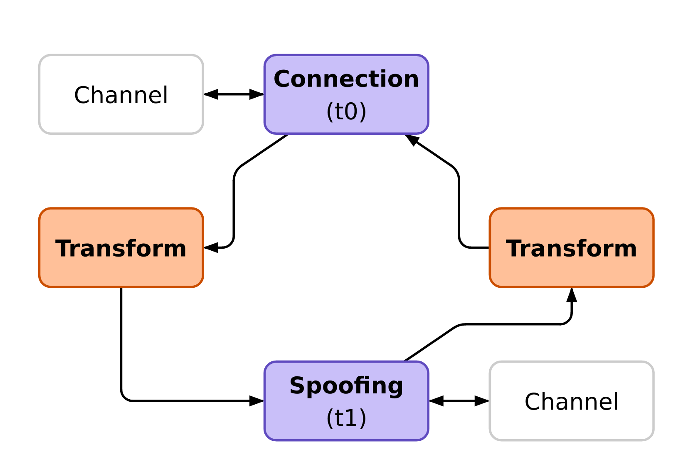
«An attacker can connect to a BLE device, advertise a spoofed one, wait for a connection and tamper with data.»
Limits / constraints
-
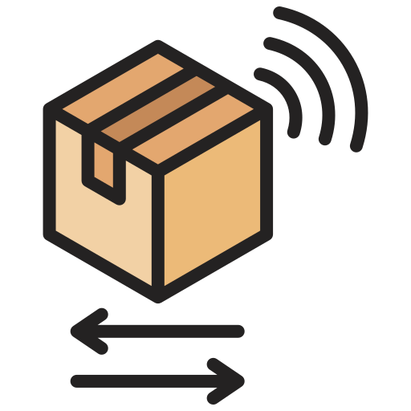
Simplified representation of the physical Layer -
Node roles have not been considered
to limit complexity -
 Abstract (& simplified) model of networks
Abstract (& simplified) model of networks
From theory to field testing
because failure is always an optionBuilding our toolbox
-
Each primitive defines a basic tool
-
Tools can be combined to perform complex tasks
-
 KISS: Keep It Simple Stupid !
KISS: Keep It Simple Stupid !
Building a tool chain
$ tool1 | tool2 | tool3
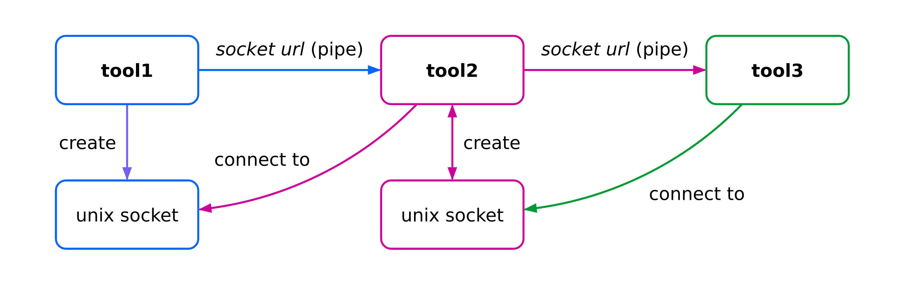
Heavy use of Scapy
- Every PDU, packet or frame is a Scapy packet
- We added support for various protocols in Scapy (not yet upstreamed 🙄)
- Some of our tools allow packet manipulation with user-supplied Python code
Field testing our tools
who said testing is doubting ?Replay attack
on a 433MHz doorbell
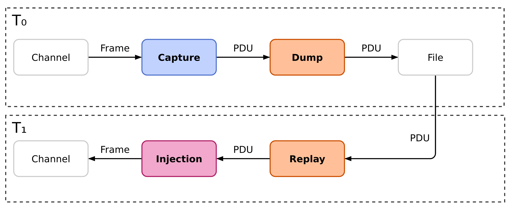
$ wsniff -i yard0 phy -f 433092000000 --ask -d 10000 |
↳ wdump doorbell-capture.pcap
$ wplay doorbell-capture.pcap | winject -i yard0 phy
Breaking weak encryption
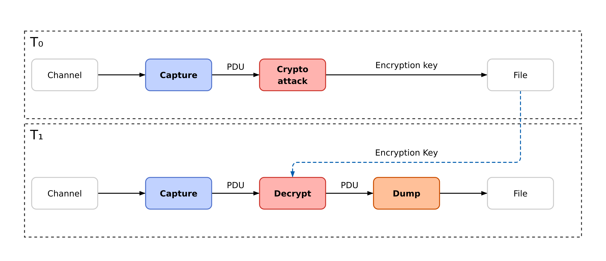
$ wsniff -i uart0 rf4ce -c 15 | wanalyze
$ wsniff -i uart0 rf4ce -c 15 -d -k ENC_KEY |
↳ wdump rf4ce-cleartext.pcap
Abusing BLE to dump a firmware
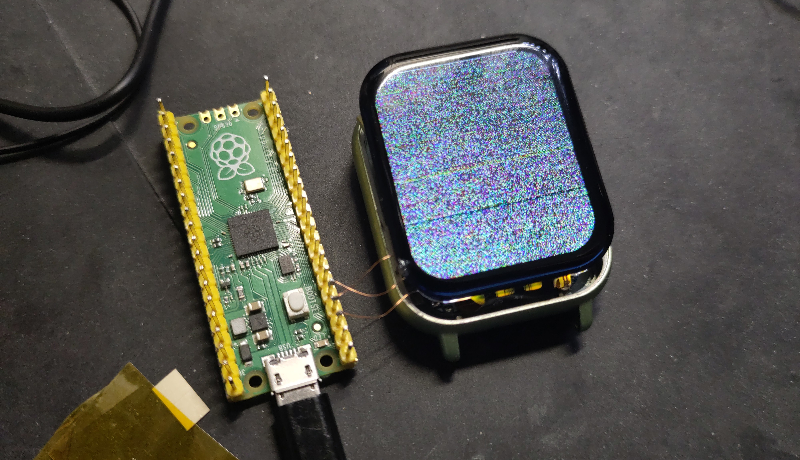
https://blog.quarkslab.com/modern-tale-blinkenlights.html
or crashing a smartwatch
Creating new tools
from scapy.packet import Packet
from whad.tools.user import user_transform
def ingress(packet: Packet) -> Packet:
"""Process packet received from previous tool"""
return packet
def outgress(packet: Packet) -> Packet:
"""Process a packet received from next tool"""
return packet
if __name__ == "__main__":
user_transform(outgress, ingress)Decrypting Meshtastic packets
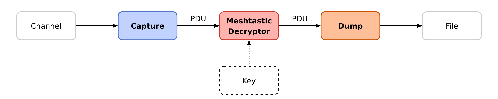
$ wsniff -i uart0 phy --lora -f 869525000 -crc -em --preamble-length 8
↳ -sf 11 -cr 45 -bw 250000 -w 28 |
↳ python3 meshtastic-decrypt.py -k ENC_KEY |
↳ wdump meshtastic-decrypted.pcap
Real-time HR monitoring
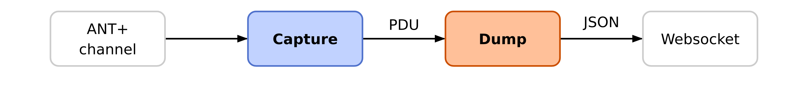
$ wsniff -i rfstorm0 phy --gfsk --datarate 1000000 -w a6c5e81e
↳ -f 2457000000 -s 16 | wserver --json
function initHealthBar() {
const socket = new WebSocket('ws://localhost:12345');
socket.addEventListener('message', function (event) {
/* Extract HR value from packet. */
let packet = JSON.parse(event.data)["Phy_Packet"]
let value = parseInt(packet["data"].substr(28,2), 16);
/* Update HTML health bar using HR value. */
setNumber(value);
});
}The price for modularity
-
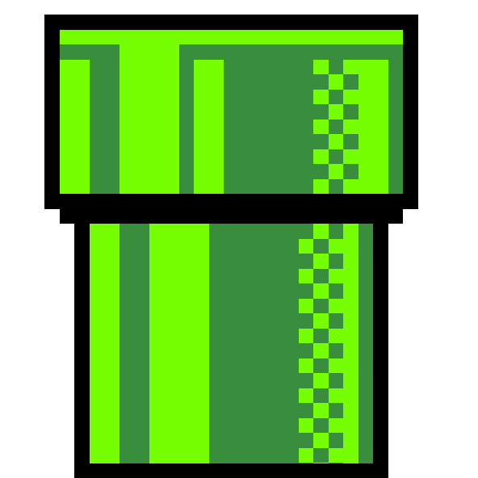
Complex piping slows down debugging -
KISS approach increases fragmentation
-
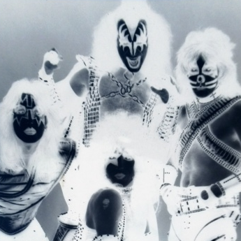
Some tools in WHAD are multi-protocols (KISS)
Conclusion
Systematization
of wireless attacks
- Never perfect due to limits and constraints
- It helped us getting a big picture of wireless attacks
- Primitives helped us designing efficient tools
- Can be improved, please contribute 🙏
WHAD provides way more tools, check it out !
Huge thanks to our contributors
And remember ...
SSTIC's proceedings (Les Actes) contain a detailed description of our systematization, its primitives and attack models.
Thank you, Q&A time !
Romain Cayre
Damien Cauquil